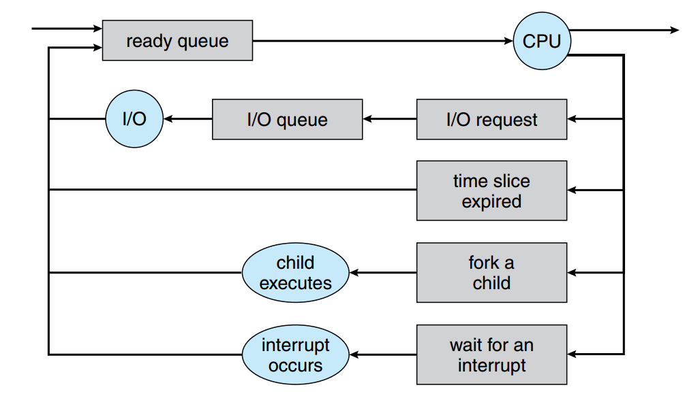
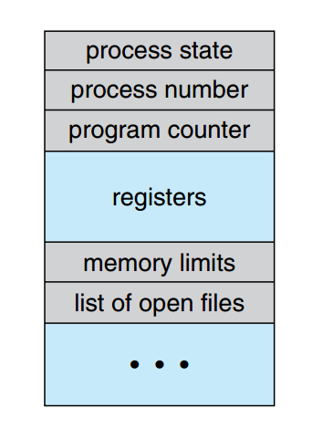

OS
A piece of software that manages a computer, making computer’s hardware
resources accessible to software through a consistent set of interfaces.
并发(Concurrence)
共享(Sharing)
虚拟(Virtual)
异步(Asynchronism)
四项重要特征为OS的核心特征，也是我们进一步做得更好的核心挑战所在。
OS Functions
- CPU管理
- 进程/线程控制和管理
- 进程同步和互斥（mutual exclusion）
- 进程通信和死锁（dead lock）
- 处理器调度，作业调度和进程调度
- 存储管理
- 存储分配
- 存储共享
- 存储保护
- 地址转换
- 存储扩充
- ⽂件管理
- ⽬录管理
- 存取控制/保护
- 逻辑组织
- 物理组织
- ⽂件存储空间管理
- 设备管理
- 设备分配
- 设备驱动
- 缓冲管理
- ⽤户接口
- 命令接口
- 程序接口
- 图形接口
- ⽹络与通信管理
OS Structure
System calls provide an interface to the services made available by an operating system.
Categories of System call:
• Process control
• File management
• Device management
• Information maintenance
• Communications
Simple Structure
MS-DOS
MS-DOS – written to provide the most functionality in the least space
- Not divided into modules
- Interfaces and levels of functionality not well separated
Unix
Limited by hardware functionality
Original UNIX operating system consists of two separable parts:
- Systems programs
- The kernel
- Consists of everything below the system-call interface and above the physical hardware
- Provides the file system, CPU scheduling, memory management, and other operating-system functions;
- Many interacting functions for one level

Layered Structure
Operating system is divided many layers (levels)
- Each built on top of lower layers
- Bottom layer (layer 0) is hardware
- Highest layer (layer N) is the user interface
模块化，易于调试
Microkernel System Structure
Moves as much from the kernel into “user” space as possible.
非基本的方法从内核中抽离，留下基本的方法。（基本：一般认为内存管理和通信功能是必须的基本方法）
Benefits:
• Easier to extend a microkernel
• Easier to port the operating system to new architectures
• More reliable (less code is running in kernel mode)
• More secure
Detriments:
• Performance overhead of user space to kernel space communication
Module based
Most modern operating systems implement kernel
modules
• Uses object-oriented approach
• Each core component is separate
• Each talks to the others over known interfaces
• Each is loadable as needed within the kernel
类似于layered structure，但是灵活性大大增长
Example:
- Scheduling classes
- File systems
- Loadable system calls
- Executable formats
- STREAMS modules
- Miscellaneous
- Device and bus drivers
Hybrid Systems
更为现代的设计方式都是采用混合模型
Virtual Machines
分层方法逻辑可延伸为虚拟机概念。虚拟机的基本思想是单个计算机(CPU 、内存、磁盘、网卡等)的硬件抽象为几个不同的执行部件，从而造成一种”幻觉”，仿佛每个独立的执行环境都在自己的计算机上运行一样。
创建虚拟机有几个原因，最根本的是，在并行运行几个不同的执行环境(即不同的操作系统)时能够共享相同的硬件。
实现
底层机器有两种模式:用户模式和内核模式。虚拟机软件可以运行在内核模式，因为它就是操作系统。虚拟机本身只能运行在用户模式。正如物理机器有两种模式一样，虚拟机也有两种模式。因此，必须有虚拟用户模式和虚拟内核模式，这两种模式都运行在物理用户模式。
优劣
• Isolation from all other virtual machines. 保证安全
• No disruption on normal system operation. 开发测试操作系统不需要中断正常操作系统的服务
• Difficult to implement due to the effort required to provide an exact duplicate to the underlying machine
实例
Vmware
虚拟层是VMware 的核心，因为它将物理硬件抽象为独立的作为客户操作系统的虚拟机运行。每个虚拟机都有它自己的虚拟 CPU、内存、磁盘驱动、网络接口等。
Java 虚拟机 (JVM)
Java 对象用类结构来描述; Java 程序由一个或多个类组成。对于每个 Java 类， Java编译器会生成与平台无关的字节码 (bytecode) 输出文件( .class ) ，它可运行在任何JVM 上。
JVM包括类加载器和执行与平台无关的字节码的Java解释器。JVM 通过执行垃圾收集(garbage collection ，回收不再使用的内存并返回给系统)来自动管理内存。
.NET
.NET框架是一套包含了类库集舍、执行环境和软件开发平台的技术。这个平台允许基于.NET框架编程而不是针对任何特定平台。
.NET 框架的核心是公共语言运行时间 (CLR)
CLR 是 .NET 虚拟机的实现
用 C#或者 VB.NET 编写的程序被编译为一种平台无关的中间语言(叫做微软中间语言 MS-IU 。这些被编译好的文件叫做组合 (assembly) ,它包含了 MS-IL 指令和元数据。它们的文件名后缀是.dll 或者.exeo 当要运行这些程序的时候， CLR 把这些组合加载进应用程序域 (Application Domain) 。
Process
进程概念
进程不只是程序代码，程序代码有时称为文本段(或代码段)**。进程还包括当前活动，通过程序计数器的值和处理器寄存器的内容来表示。另外，进程通常还包括进程堆栈段**(包括临时数据，如函数参数、返回地址和局部变量)和数据段(包括全局变量)。进程还可能包括堆 (heap) ，是在进程运行期间动态分配的内存。
英文解释更为简单：
A process is a program in execution
进程在执行时产生许多进程是很常见的。
程序与进程之间的区别:
- “进程”是一个动态的概念:进程强调的是程序的一次“执行”过程,程序是一组有序指令的集合,在多道程序设计环境下,它不涉及“执行”,因此,是一个静态的概念;
- 不同的进程可以执行同一个程序:即使多个进程执行同一个程序,只要它们运行在不同的数据集合上,它们就是不同的进程;
- 每一个进程都有自己的生命期:当系统要完成某一项工作时,它就“创建”一个进程,程序执行完毕,系统就“撤销”这个进程,收回它所占用的资源。
进程状态
进程在执行时会改变状态。进程状态在某种程度上是由当前活动所定义的。每个进程可能处于下列状态之一:
- 新的:进程正在被创建。
- 运行:指令正在被执行。
- 等待:进程等待某个事件的发生(如 IO 完成或收到信号)。
- 就绪:进程等待分配处理器。
- 终止:进程完成执行。

进程控制块
每个进程在操作系统内用进程控制块 (process control block. PCB. 也称为任务控制块)来表示。
- **进程状态:**状态可包括新的、就绪、运行、等待、停止等。
- **程序计数器:**计数器表示进程要执行的下个指令的地址。
- **CPU 寄存器:**根据计算机体系结构的不同，寄存器的数量和类型也不同。它们包括累加器、索引寄存器、堆战指针、通用寄存器和其他条件码信息寄存器。与程序计数器一起，这些状态信息在出现中断时也需要保存，以便进程以后能正确地继续执行。
- **CPU 调度信息:**这类信息包括进程优先级、调度队列的指针和其他调度参数
- **内存管理信息:**根据操作系统所使用的内存系统，这类信息包括基址和界限寄存器的值、页表或段表(见第 8 章)。
- **记账信息:**这类信息包括 CPU 时间、实际使用时间、时间界限、记账数据、作业或进程数量等。
- **I/O 状态信息:**这类信息包括分配给进程的 νo 设备列表、打开的文件列表等。
简而言之， PCB 简单地作为这些信息的仓库，这些信息在进程与进程之间是不同的。

线程
一个进程是一个只能进行单个执行线程的程序。
进程调度
调度队列
进程进入系统时，会被加到作业队列中，该队列包括系统中的所有进程。
讨论进程调度的常用表示方法是队列图
每个长方形表示一个队列。有两种队列:就绪队列和一组设备队列。圆形表示为队列服务的资源，箭头表示系统内进程的流向。
进程创建
当进程创建新进程时，有两种执行可能:
- 父进程与子进程并发执行。
- 父进程等待，直到某个或全部子进程执行完。
新进程的地址空间也有两种可能:
- 子进程是父进程的复制品(具有与父进程相同的程序和数据)。
- 子进程装入另一个新程序。
Unix通过pid变量标记进程，fork（）函数创建进程。
fork的时候发生什么？
=》执行到这一句的时候，一个进程被创建了，这个进程与父进程一样，拥有一套与父进程相同的变量，相同的一套代码，这里可以粗浅的理解为子进程又复制了一份main函数。这里返回一个子进程的进程号，大于0。（第一次fork）
通常，在系统调用fork()之后，一个进程会使用系统调用exec()，以用新程序来取代进
程的内存雪间。系统调用exec()将二进制文件装入内存(消除了原来包含系统调用exec()的
程序的内存映射)，并开始执行。采用这种方式，两个进程能相互通信，并能按各自的方法
执行。父进程能创建更多的子进程，或者如果在子进程运行时没有什么可做，那么它采用
系统调用wait()把自己移出就绪队列来等待子进程的终止。
子进程怎么执行：
=》子进程从fork()的位置开始执行，也就是说前面的代码不走，但是拥有之前的变量以及变量的值，与父进程的值一样，这次fork()，返回值是0，所以在子进程里面直接执行了pid==0这一个分支，父进程里面并不执行这个分支的语句。这就为我们在写mian函数的时候怎么写子进程的程序提供了一个方法来隔离代码。
1 |
|
运行会输出8次this is a process
进程结束
当进程完成执行最后的语句并使用系统调用exit()请求操作系统删除自身时，进程终止。这时，进程可以返回状态值(通常为整数)到父进程(通过系统调用wait()) 。所有进程资源(包括物理和虚拟内存、打开文件和 I/O 缓冲)会被操作系统释放。
有些系统，包括 VMS ，不允许子进程在父进程己终止的情况下存在。对于这类系统，如果一个进程终止(正常或不正常)，那么它的所有子进程也将终止。这种现象，称为级联终止( cascading termination) ，通常由操作系统进行。
调度程序
进程调度算法的原则:
- (1)公平性。
- (2)资源利用率(特别是CPU利用率)。
- (3)响应时间 - 交互式系统情况。
- (4)系统吞吐量 - 批处理系统。
- (5)周转时间 – 从进程提交到进程完成的时间间隔。
- (6)等待时间 – 在就绪队列中等待所花费的时间之和
通常对于批处理系统，进程更多地是被提交，而不是马上执行。这些进程被放到大容量存储设备(通常为磁盘)的缓冲地中，保存在那里以便以后执行。长期调度程序(long-term scheduler) 或作业调度程序 (job scheduler) 从该地中选择进程，并装入内存以准备执行。短期调度程序 (short-term scheduler) 或 CPU 调度程序从准备执行的进程中选择进程，并为之分配 CPU 。
这两个调度程序的主要差别是它们执行的频率。短期调度程序必须频繁地为CPU 选择新进程。